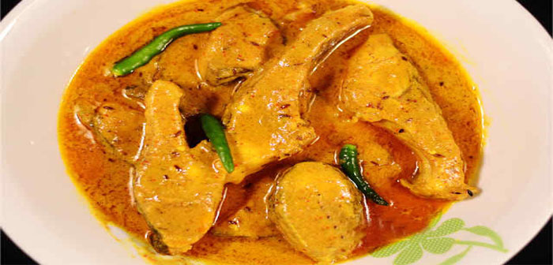

Ingredients:
1)1 kg fish
2)1/2 cup curd
3)1/2 cup onion paste
4)2 tsp ginger paste
5)1 tsp garlic paste
6)1 tbsp coriander paste
7)6 cardamom
8)1 inch cinnamon
9)2 tsp salt
10)3/4 cup ghee or oil
11)6 green chilli
12)2 tbsp kewra
13)1 tbsp sugar
14)1 tbsp lemon juice
How to make Fish Korma :
1)Use large fish for korma.
2)Do not cut the fish into too small pieces.
3)Carp is great for Korma.
4)Except for the green chilles and kewra, add all the rest of stuff into the cooking dish. Mix well. Heat covered in low heat.
5)Turn over the fish once (be careful).
6)When the water has almost dried up, add the green chilli and the kewra heat for another half hour in very low heat.
7)When the oil begins to float on top, you are done.
8)Serve fish korma hot with tandoori roti or rice.